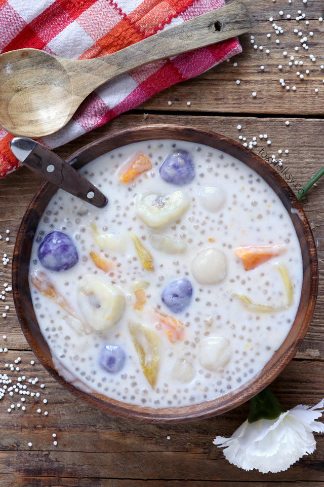

Ginataang Bilo-bilo

Description
On rainy season nothing beats bilo-bilo when it comes to comfort food
Ingredients
- 2 cups glutinous rice flour
- 2 400 ml can coconut milk or cream
- 2-3 cups water
- 1 1/2 cup cooked tapioca pearls
- 3/4 cup sugar
- 2 big sweet potatos - peeled and cubed
- 4 pieces plantaan bananaas - peeled and cubed
- 1 cup jackfruit - cut into strips
Steps
- Prepare the sticky rice balls by adding 1 cup of water to 2 cups glutinous rice flour. Mix with a fork until it forms a dough. Scoop about half a spoon of the dough and form them into balls using your palms. Set them aside.
- In a pot, combine 2 cups water, coconut milk, and sugar and bring to boil. Add the sweet potato cubes and cook for about 3 minutes stirring occasionally. Next, add the plantain banana cubes and cook for about 3 minutes.
- Once the sweet potatoes and bananas are almost cooked, add the sticky rice balls and let simmer until they are cooked (about 5 minutes) while stirring occasionally. You know the sticky balls are done when they are floating.
- Add the jackfruit slices and the cooked tapioca pearls. Let simmer for another 3-5 minutes or until all fruits are tender and cooked.
- Note that it will continue to thicken even after removing it from the heat. Serve hot or cold.